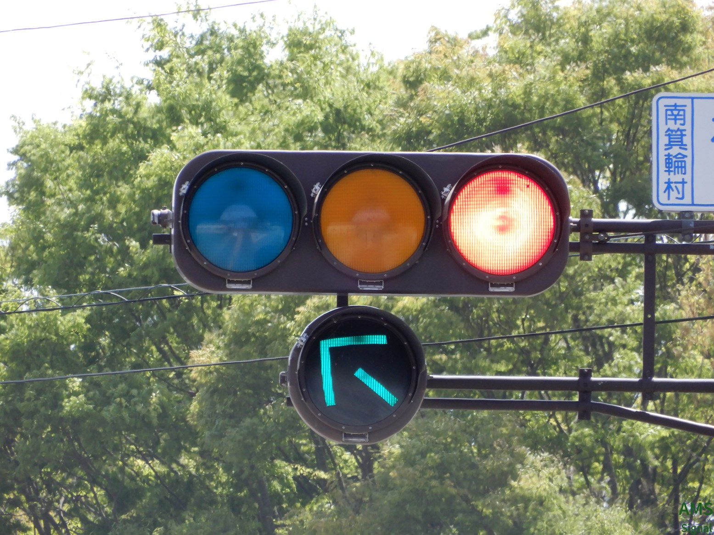

その他の市町村
小諸市

小諸駅近く
交互通行のトンネルで赤の時間が長くて電球切れの事態を想定しているのかおまけの赤一灯がついています。訪問時上の赤は残念ながら点灯しませんでした。
南箕輪村


神子柴
界隈で有名な長野県唯一の450mm灯器です。地域の方も知られているようで、通りかかった地域の方も「ここの信号機、大きいんでしょ!?」とおっしゃってました。
飯田市

中部電力前
京三ダークアイレンズ鉄板 小糸最終型鉄板 第二世代おにぎり 第三世代おにぎり ダークアイレンズの京三鉄板が設置されています。(文・画像：信・鉄撮影さん)